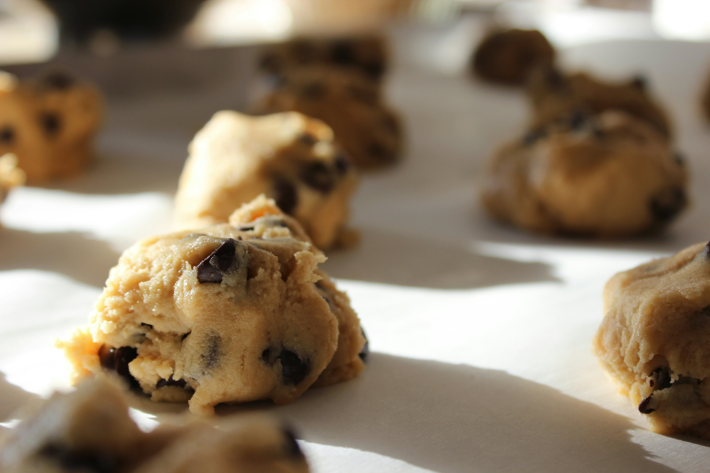
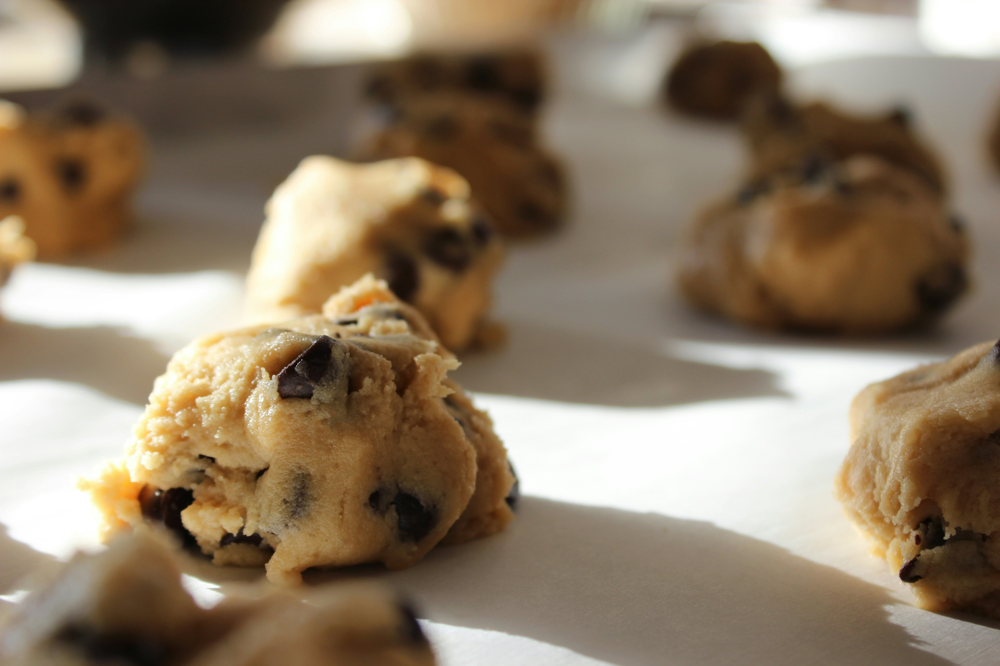
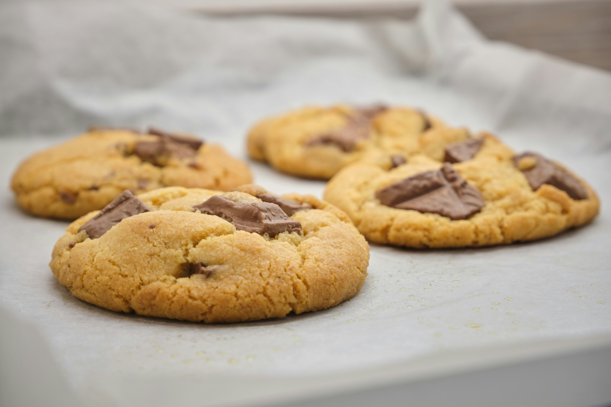
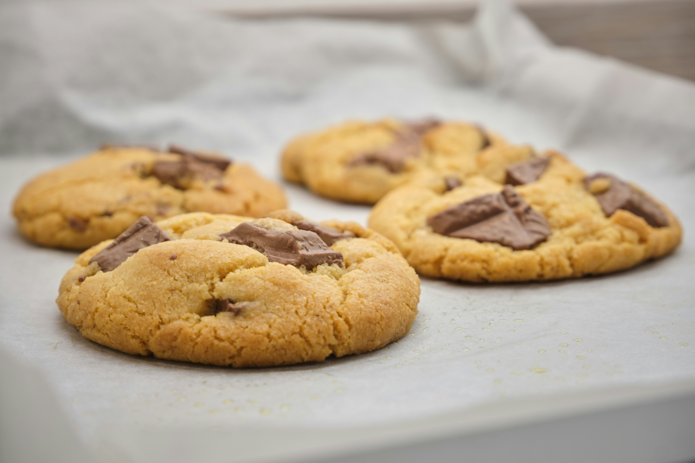

Les cookies
d'Alice
Gourmandise fondante au beurre
Plongez dans l’univers fondant et croustillant des Cookies d’Alice : des petits biscuits dorés au cœur moelleux, où le beurre fond dans la bouche et le chocolat danse sur les papilles. La gourmandise à l’état pur !
Suivre la recette
 

 
